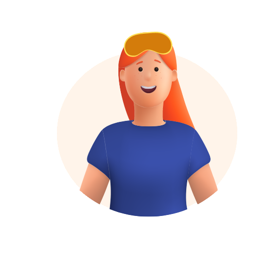
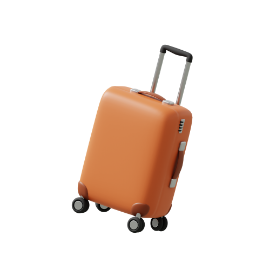

-
אני טס/ה
יש לך לחץ באוזניים בזמן טיסות? את/ה לא לבד! תופעה זו נפוצה בזמן טיסות, ויכולה להשפיע משמעותית על חווית הטיסה שלך. נמליץ לך ללמוד איך להשתמש באירדוק, שיפחית לך את הלחץ באוזניים בטיסות.
- 
-

-
לחץ באוזניים בטיסות - למה זה קורה?
תחושת לחץ באוזניים במהלך טיסה נוצרת בעיקר בהמראה ובנחיתה, כתוצאה מהפרש הלחצים בין האוויר הסביבתי לאוויר הכלוא בחלל האוזן התיכונה. לא להיות בלחץ... יש לנו פתרון שתעופו עליו!
כיצד האירדוק משפיע על האוזן?
לחיצה על כל אייקון תחשוף מידע על החלק באוזן. אבל איך הוא עובד? לחצו על הכפתור כדי לגלות...
למה דווקא אירדוק?

קומפקטי
עיצובו הארגונומי של האירדוק הופך אותו למוצר קל לשימוש ולנשיאה בכל מקום. גודלו הקטן מאפשר לקחת אותו בתיק או במזוודה, כך שתוכלו להקל על כאבי אוזניים גם במהלך הטיסה.

פתרון טבעי
האירדוק מציע פתרון נוח ונטול כאבים להקלת כאבי אוזניים, ללא צורך במרשם רופא. בניגוד לאנטיביוטיקה, הטיפול אינו פולשני ואינו גורם לתופעות לוואי.

יעילות מוכחת
מחקר שנעשה על מכשיר האירדוק מצביע על כך שמכשיר האירדוק יעיל בהפחתת תחושת הלחץ באוזניים, תסמין נפוץ של כאבי אוזניים הנגרמים משינויי לחץ במהלך טיסות. לקריאה נוספת לחצו כאן.
-
פתרון חדש לכאבי אוזניים בטיסות: מכשיר האירדוק
לחיצה על כל אייקון תחשוף הסבר על אותו חלק, ואפשר להזיז את הסליידר כדי לסובב את המכשיר.
איך לתפעל את האירדוק צעד אחר צעד
אחרי שהבנו איך האירדוק משפיע על האוזן בזמן הטיסה, הגיע הזמן ללמוד איך להשתמש בו נכון! אל דאגה, זה לא מסובך כמו להטיס מטוס - תוכלו ללמוד הכל ב 4 צעדים פשוטים.